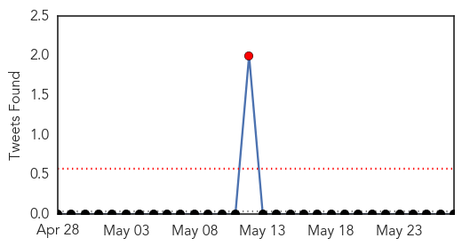
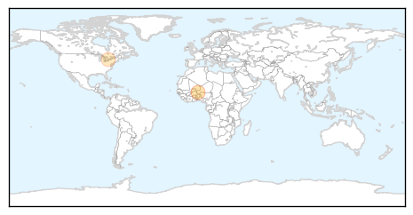
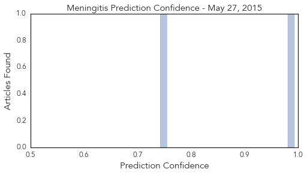
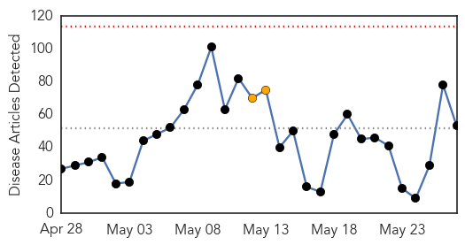
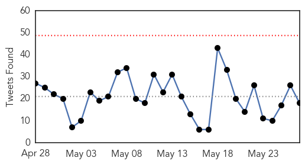
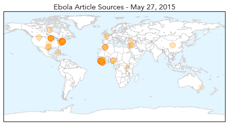

Meningitis
30-Day Web Trend
0 alerts, 0 warnings

30-Day Twitter Trend
1 alerts, 0 warnings

Article Locations
Article Confidences
Top Articles:
Top Tweets:
-
No tweets found for May 27, 2015
Ebola
30-Day Web Trend
0 alerts, 2 warnings

30-Day Twitter Trend
0 alerts, 0 warnings

Article Locations
Article Confidences

Top Articles:
- 1.000
- Echoes of Ebola in N.J. patient's death from Lassa fever
- 0.999
- Driving Ebola Away in Guinea
- 0.999
- Hospital Says Man Who Died of Lassa Fever Initially Didn’t Disclose Trip to Africa
- 0.999
- In Essex County Man’s Death, Echoes of Much-Publicized Ebola Case in Texas
- 0.999
- Lassa fever death in New Jersey recalls Ebola death in Texas
- 0.999
- Lassa Fever Death in New Jersey: Risk to Public Called Low
- 0.998
- How Worried Should We Be About Lassa Fever?
- 0.998
- Monitoring System Is Criticized as Rare Virus Causes a Death in New Jersey
- 0.998
- U.S. Traveler Returning From Liberia Dies of Lassa Fever: CDC
- 0.998
- For months after recovery, Ebola is essentially an STD
- 0.998
- How Worried Should We Be About Lassa Fever?
- 0.997
- New Jersey man, who has recently returned from Liberia dies of Lassa fever
- 0.997
- Rocky Mountain Labs presents work on Ebola
- 0.997
- Why Lassa fever won’t be the next Ebola
- 0.997
- Ebola's 'Achilles heel' is identified, paving the way for new treatments to defeat the deadly virus
- 0.996
- The most predictable disaster in the history of the human race
- 0.996
- Death of New Jersey man from Lassa fever cause for worry?
- 0.995
- Man diagnosed with Lassa fever dies in US after Liberia trip
- 0.994
- WHO urge communities to “remain vigilant” « Awoko Newspaper
- 0.993
- Man From New Jersey Diagnosed With Lassa Fever Dies
- 0.993
- Patient being tested for disease at St. Joseph's hospital
- 0.991
- Lassa Fever Death Prompts Ebola Fears In New Jersey
- 0.990
- Why name of Lassa Fever victim is not being released
- 0.990
- New Jersey Man Dies From Rare Diseased Picked Up in Liberia
- 0.990
- Did We Rely Too Much on Contact Tracing?
- 0.989
- Study: More were treated for Ebola-like symptoms in Texas
- 0.989
- Researchers find Ebola 'Achilles heel' – study
- 0.989
- Ebola in Liberia Frightened Patients Infected Their Caregivers
- 0.987
- Man Dies of Lassa Fever in New Jersey
- 0.986
- The next Ebola? Man dies suddenly of terrifying Lassa disease from West Africa
- 0.984
- In Sierra Leone, Care Kits Deliver Assistance and Hope to Families
- 0.983
- I’m Happy That We Can Shake Hands Again
- 0.982
- Politico SL News Famine threatens Sierra Leone – German NGO
- 0.978
- New Jersey man dies after Lassa fever diagnosis
- 0.976
- Man traveling to US from Liberia dies from Lassa fever
- 0.968
- Man Dies from Lassa Fever After Trip to Liberia
- 0.956
- A man from New Jersey dies after he is diagnosed with Lassa fever
- 0.904
- President Xi Jinping Sends Congratulatory Message to President of Liberia on End of Ebola Epidemic in Liberia
- 0.894
- Last Cuban Doctors Who Fought Ebola Back Home
- 0.880
- Politico SL News Mass Ebola raid in Koidu
- 0.866
- ‘’WE ARE KEEN TO BE MORE FLEXIBLE THAN YOU HAVE REQUESTED’’- GLOBAL FUND BOSS ASSURES HEALTH AND SANITATION MINISTER
- 0.859
- WHO begins race to meet WHA commitments
- 0.778
- West and Central Africa Region Weekly Humanitarian Snapshot (19 - 25 May 2015) - Guinea
- 0.769
- Sierra Leone Envoy Hits Jackpot in Turkey
- 0.722
- UNDP Supports Vital Payments to Ebola Emergency Response Workers
- 0.687
- Ghanaian actor John Dumelo fights Ebola in Guinea -
- 0.665
- “Sierra Rutile is part of Sierra Leone’s economic growth…” -VP Foh
- 0.640
- Bill Gates biggest fear is a killer flu
- 0.575
- Rising Sun
- 0.574
- African voices tell their stories about health efforts:Wednesday 27 May 2015
Showing top 50 articles...
Top Tweets:
- 0.762
- The New Yellow in Sierra Leone: Getting Ebola to Zero - Huffington Post http://t.co/Pv48putDoL ebola EVD
- 0.723
- New Ebola study says a dozen more hospitalized in Dallas outbreak than revealed - Dallas Morning News http://t.co/uOVdiD45X8 ebola EVD
- 0.712
- Why Lassa fever won't be the next Ebola - Quartz http://t.co/VrVqOMCfZb ebola EVD
- 0.565
- 3-D animation. Outsmarting Ebola Virus: Innovative Research on Treatment https://t.co/8h8so4i172 via
- 0.562
- How funny messages from 'Polly' can fight Ebola - Futurity: Research News http://t.co/cccAPbxtXw ebola EVD
- 0.531
- To keep up with our latest thoughts on the Ebola outbreak in West Africa visit http://t.co/lcUL5rlfx0.
- 0.525
- What the Defense Department Learned From the Ebola Crisis - Daily Signal http://t.co/k3Ivl3Nibw ebola EVD
- 0.525
- Lassa fever death in New Jersey recalls Ebola death in Texas - New Haven Register http://t.co/ZGGW8QEvwL ebola EVD
- 0.524
- RT: JustPublished: Controlling the Last Known Cluster of Ebola Virus Disease – Liberia January-Feb 2015. http://t.co/97…
- 0.511
- For months after recovery Ebola is essentially an STD - Quartz http://t.co/9aLg335GiB ebola EVD